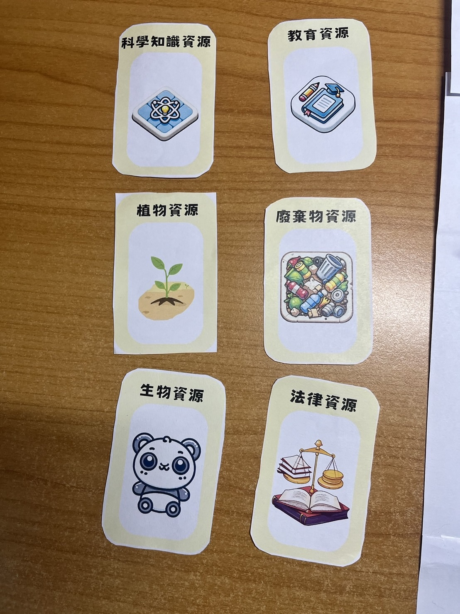
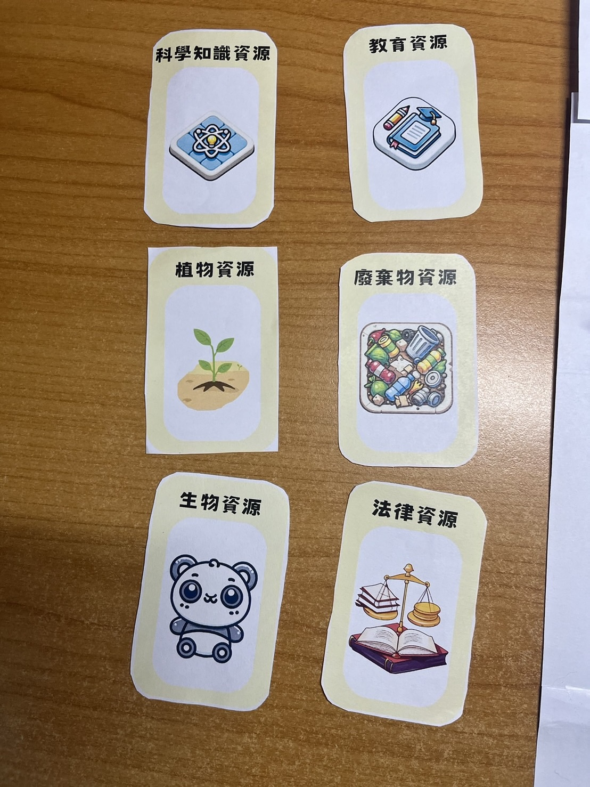

EcoQuest - Heroes of the GLOBE
Game Introduction
"EcoQuest - Heroes of the GLOBE" is a card-based board game that combines environmental education with mission-based gameplay. Players learn about local and global environmental issues, the scientific spirit, and solve missions by allocating their resource cards. They can earn more points by answering questions related to GLOBE protocol and environmental science knowledge.
Story Background : Scientific Action to Save the Earth
The future Earth faces an environmental crisis, with climate change, natural resource depletion, and ecosystem collapse threatening human survival. Environmental organizations, academic institutions, and governments around the world have decided to unite and launch the NASA SPACE program, an international collaborative effort aimed at protecting the Earth. This program is based on the GLOBE (Global Learning and Observations to Benefit the Environment) program, calling on global citizens and professionals to work together to take action for the future of our planet.
As part of the NASA SPACE program, players will take on the roles of environmental heroes from around the world, such as environmental lawyers, Little Mei's Mom, beekeepers, tea farmers, and others. Each character has unique expertise and resources, and they bear the responsibility of saving the environment in their own region. Through collaboration, players will face environmental disasters, manage limited resources, and find solutions to restore Earth's ecosystem in the game.
In the game, players need to complete a series of environmental protection missions, including purifying polluted water sources, restoring forests, improving urban air quality, and more. These missions are not accomplished by a single player but require close cooperation and resource sharing among different characters. Players must discuss how to effectively allocate their resource cards and make long-term plans to address current environmental problems.
As the game progresses, the rate of environmental deterioration accelerates, and players will face random threats of natural disasters, such as floods, droughts, or typhoons. These events will affect player progress, forcing them to readjust their strategies. Players need to adapt flexibly and focus resources on the most critical issues to ensure that the Earth's ecosystem can gradually recover.
Ultimately, when all players successfully complete their environmental missions and effectively control environmental disasters, the Earth's environmental conditions will significantly improve, and the NASA SPACE program's mission will be accomplished. Players will not only enjoy the fun of teamwork in the game but also gain a deeper understanding of the importance of environmental protection.
Game Rules
- Recommended Player Count: 4-6 players
- Recommended Age: 8 years old and up
- Average Playtime: 30-60 minutes
Card Overview
- Character Cards: Each player chooses a character, each with a special ability.
- Mission Cards: These cards represent environmental protection tasks players need to complete in the game. Each terrain has a main objective for missions, players can explain which objective the mission they want to undertake belongs to. If other players agree with their explanation, it is considered reasonable. Otherwise, players must choose other missions and re-explain to other players. If there is no mission card that matches the terrain, a **Special Situation** will be triggered.
Each card includes the following elements:- Mission Name: E.g., "Clean Up River Pollution" or "Monitor Rainfall".
- Resources Needed: The number of resource cards required to complete the mission (e.g., water resource cards, soil resource cards, etc.).
- Science Challenge: Some missions require answering science questions or answering questions based on science knowledge cards (this helps with education and learning).
- Rewards: Upon successful completion of the mission, players will earn points and resources.
- Resource Cards: Include various natural resources
- Event Cards: One event card is drawn at the end of each turn. These events can be natural disasters, climate change, or pollution incidents. Events can:
- Affect the resource supply in an area (e.g., "Drought reduces water resources").
- Force players to deal with challenges, otherwise resources or points will be lost.
Gameplay
- Game Start:
- Each player chooses a character and places the chosen character at the map's starting point
- Each player takes five resource cards as starting resources
- Draw out a number of mission cards equal to the number of players and lay them out on the table
- Decide freely who starts first.
- Players can discuss collaboration before the start of each round
- Turn Progression:
- If a player has enough resource cards in their hand to complete a mission on the table, they activate the card's influence based on their current terrain, draw a new mission card to replace the original one.
(Special Situation: If none of the current mission cards match the current terrain, then the mission cannot be completed in that turn, the next player continues playing, they can still draw a resource card; if there is **no** mission card that matches the terrain, then redraw five mission cards to replace them, and all players **move back one terrain**, if they are already on the initial terrain, they return to the starting point. - After solving the mission, the player answers. After completing the mission, they can scan the QR code on the mission card, which contains a bonus question. If the player answers correctly, they can move forward one space, answering incorrectly will not result in any penalties (character's own skill influence is not included here)
- Before the end of the turn, the player draws a new resource card.
- If a player has enough resource cards in their hand to complete a mission on the table, they activate the card's influence based on their current terrain, draw a new mission card to replace the original one.
- Game End: When a player reaches the finish line, the game ends. Players share their knowledge about the environment and their experience in solving problems learned during the game.
Terrain Description
- City Area

- Suburbs and Towns

- Agricultural Area

- Industrial Area

- Mountain Area

- Forest Area

- Rivers and Wetlands

- Coastal Area

Character Card Design
- Lawyer
- Background: Familiar with environmental regulations, able to use legal means to protect the environment and resolve environmental disputes.
- Special Ability: When resolving missions, the number of legal resource cards consumed is reduced by 1.
- Little Mei's Mom
- Background: A mother who cares about her children's growth and the environment, always educating her children about environmental protection in daily life.
- Special Ability: When performing missions, the number of plant or water resource cards consumed is reduced by 1.
- Breakfast Shop Auntie
- Background: Focuses on resource conservation in daily life, promoting plastic reduction and environmentally friendly business practices.
- Special Ability: Draw one extra resource card during the drawing turn.
- Tea Farmer
- Background: Lives in the mountains, familiar with ecological agriculture, skilled in using sustainable agricultural techniques to grow tea.
- Special Ability: Directly consume 1 water resource card to move forward 2 spaces, consume a maximum of 1 card per turn.
- Delivery Person
- Background: Travels around the city every day, sensitive to urban environmental problems (e.g., traffic pollution, waste disposal).
- Special Ability: Complete a mission in the city area and move directly to the next area.
- Motorcycle Shop Owner
- Background: Familiar with motorcycle repair and modification, advocates for green transportation and focuses on reducing traffic pollution.
- Special Ability: After completing a mission, roll the dice. If you roll 1 or 2, move back 1 space; if you roll 3 or 4, move forward 1 space; if you roll 5 or 6, move forward 2 spaces.
- Beekeeper
- Background: Professionally handles bee colony relocation and protection, understands the importance of bees in the ecosystem.
- Special Ability: Move forward 2 spaces after completing missions in agricultural areas, forest areas, and suburbs and towns.
- Professor Wu
- Background: University professor, main research field is modern cosmology, with rich academic background. He also has in-depth research on Qigong, Bagua, and I Ching.
- Special Ability: Move forward 2 spaces when answering correctly or finding someone else's mistake. If Professor Wu answers incorrectly, then move back 1 space.
Resource Card Types
- Water Resources
- Usage: Suitable for missions related to water quality management, wetland protection, agricultural irrigation.
- Card Quantity: 15 cards
- Soil Resources
- Usage: Suitable for soil monitoring, agricultural land, forest protection etc.
- Card Quantity: 10 cards
- Plant Resources
- Usage: Suitable for forest protection, vegetation planting, bee habitat protection etc.
- Card Quantity: 12 cards
- Waste Resources
- Usage: Suitable for garbage disposal, industrial pollution control etc.
- Card Quantity: 8 cards
- Energy Resources
- Usage: Suitable for energy conservation and emission reduction, renewable energy promotion etc.
- Card Quantity: 8 cards
- Air Resources
- Usage: Suitable for air pollution monitoring, urban environmental management etc.
- Card Quantity: 6 cards
- Education Resources
- Usage: Suitable for community education activities, environmental protection promotion etc.
- Card Quantity: 6 cards
- Legal Resources
- Usage: Suitable for missions related to legal regulation, policy promotion, such as industrial wastewater treatment, pollution control.
- Card Quantity: 4 cards
- Labor Resources
- Usage: Suitable for missions requiring multiple people to collaborate, such as community clean-up, tree planting activities.
- Card Quantity: 6 cards
- Scientific Knowledge Resources
- Usage: Suitable for missions involving professional technical skills, such as climate change analysis, scientific research.
- Card Quantity: 6 cards
- Biological Resources
- Usage: Suitable for missions related to protecting animal and plant ecosystems, bee habitats.
- Card Quantity: 6 cards
Mission Card Design
River Water Quality Monitoring(3)
- Description: Monitor local river water quality using scientific methods to identify pollution sources and protect aquatic ecosystems.
- Resource Cards Needed:
- Water Resource Cards × 2
- Scientific Knowledge Resource Cards × 1
- Rewards Received:
- Points: 5 points
- Obtain an additional 1 Science Knowledge Resource Card
Soil Health Assessment(2)
- Description: Take samples and analyze farmland soil to improve soil quality and promote sustainable agriculture.
- Resource Cards Needed:
- Soil Resource Cards × 2
- Scientific Knowledge Resource Cards × 1
- Rewards Received:
- Points: 5 points
- Obtain 1 Plant Resource Card
City Air Quality Improvement(1)
- Description: Install air monitoring equipment and promote measures to reduce air pollution.
- Resource Cards Needed:
- Air Resource Cards × 2
- Energy Resource Cards × 1
- Rewards Received:
- Points: 6 points
- Obtain 1 Education Resource Card
Community Waste Management(2)
- Description: Organize community recycling programs to reduce the impact of waste on the environment.
- Resource Cards Needed:
- Waste Resource Cards × 2
- Education Resource Cards × 1
- Rewards Received:
- Points: 5 points
- Obtain 1 Labor Resource Card
Biodiversity Survey(2)
- Description: Conduct a survey of local biological species and establish ecological protection plans.
- Resource Cards Needed:
- Biological Resource Cards × 2
- Scientific Knowledge Resource Cards × 1
- Rewards Received:
- Points: 7 points
- Obtain 1 Plant Resource Card
Energy Efficiency Improvement(1)
- Description: Promote energy-efficient equipment in the community to reduce energy consumption and carbon emissions.
- Resource Cards Needed:
- Energy Resource Cards × 2
- Education Resource Cards × 1
- Rewards Received:
- Points: 6 points
- Obtain 1 Air Resource Card
Forest Restoration Plan(2)
- Description: Plant native tree species to restore forest ecosystems.
- Resource Cards Needed:
- Plant Resource Cards × 3
- Labor Resource Cards × 1
- Rewards Received:
- Points: 8 points
- Obtain 1 Biological Resource Card
Environmental Regulation Promotion(1)
- Description: Educate the public about environmental protection regulations and improve law-abiding awareness.
- Resource Cards Needed:
- Legal Resource Cards × 1
- Education Resource Cards × 1
- Rewards Received:
- Points: 4 points
- Obtain 1 Legal Resource Card
Wetland Protection(2)
- Description: Protect and restore wetland environments, maintain waterbird habitats.
- Resource Cards Needed:
- Water Resource Cards × 2
- Biological Resource Cards × 1
- Rewards Received:
- Points: 7 points
- Obtain 1 Soil Resource Card
Agricultural Water Management(2)
- Description: Optimize irrigation techniques to improve agricultural water efficiency.
- Resource Cards Needed:
- Water Resource Cards × 2
- Energy Resource Cards × 1
- Rewards Received:
- Points: 5 points
- Obtain 1 Plant Resource Card
Shoreline Cleanup(2)
- Description: Organize beach cleanup activities to reduce marine litter.
- Resource Cards Needed:
- Waste Resource Cards × 2
- Labor Resource Cards × 1
- Rewards Received:
- Points: 6 points
- Obtain 1 Water Resource Card
Soil Erosion Control(1)
- Description: Plant vegetation on hillslopes to prevent soil erosion.
- Resource Cards Needed:
- Soil Resource Cards × 1
- Plant Resource Cards × 2
- Rewards Received:
- Points: 6 points
- Obtain 1 Biological Resource Card
Climate Change Education(1)
- Description: Conduct climate change-related education activities to raise public awareness.
- Resource Cards Needed:
- Education Resource Cards × 2
- Scientific Knowledge Resource Cards × 1
- Rewards Received:
- Points: 5 points
- Obtain 1 Energy Resource Card
Renewable Energy Development(1)
- Description: Promote renewable energy projects like wind or solar power.
- Resource Cards Needed:
- Energy Resource Cards × 2
- Legal Resource Cards × 1
- Rewards Received:
- Points: 7 points
- Obtain 1 Air Resource Card
Environmental Science Symposium(1)
- Description: Host an environmental science symposium to share the latest research findings.
- Resource Cards Needed:
- Scientific Knowledge Resource Cards × 2
- Education Resource Cards × 1
- Rewards Received:
- Points: 6 points
- Obtain 1 Legal Resource Card
Urban Greening(2)
- Description: Plant trees and flowers in the city to improve environmental quality.
- Resource Cards Needed:
- Plant Resource Cards × 2
- Labor Resource Cards × 1
- Rewards Received:
- Points: 5 points
- Obtain 1 Air Resource Card
Exhaust Emission Monitoring(1)
- Description: Monitor exhaust emissions from industrial areas and promote emission reduction measures.
- Resource Cards Needed:
- Air Resource Cards × 2
- Legal Resource Cards × 1
- Rewards Received:
- Points: 7 points
- Obtain 1 Energy Resource Card
Environmental Protection Volunteer Training(1)
- Description: Train environmental protection volunteers to participate in various environmental protection activities.
- Resource Cards Needed:
- Education Resource Cards × 1
- Labor Resource Cards × 2
- Rewards Received:
- Points: 4 points
- Obtain 1 Labor Resource Card
Ecotourism Promotion(1)
- Description: Develop ecotourism to improve public awareness of the natural environment.
- Resource Cards Needed:
- Biological Resource Cards × 1
- Plant Resource Cards × 1
- Education Resource Cards × 1
- Rewards Received:
- Points: 6 points
- Obtain 1 Water Resource Card
Environmental Regulation Enforcement(1)
- Description: Assist the government in enforcing environmental regulations and combating environmental crimes.
- Resource Cards Needed:
- Legal Resource Cards × 2
- Labor Resource Cards × 1
- Rewards Received:
- Points: 8 points
- Obtain 1 Soil Resource Card
Event Cards
Forest Fire Outbreak
- Event Description: A forest fire breaks out in a certain area, severely damaging the local ecosystem.
- Impact: Missions that consume water resource cards require an additional 1 water resource card.
Waste Treatment Plant Explosion
- Event Description: An explosion at a waste treatment plant releases hazardous substances, polluting the surrounding environment.
- Impact: Each player needs to consume 1 waste resource card to complete the mission.
Farmland Water Source Pollution
- Event Description: Factory wastewater contaminates the water source of local farmland, affecting crop growth.
- Impact: Missions that consume water resource cards require an additional 1 water resource card.
Marine Plastic Pollution
- Event Description: A large amount of plastic waste is found on the local coast, causing serious damage to the marine ecosystem.
- Impact: Each player needs to consume 1 labor resource card to complete the mission.
Soil Heavy Metal Pollution
- Event Description: Heavy metal levels in local soil exceed standards, affecting agriculture and the ecosystem.
- Impact: Players in agricultural areas need to consume an additional 1 soil resource card to complete the mission.
Climate Change Causes Drought
- Event Description: Severe drought leads to water scarcity, affecting residents' lives and agriculture.
- Impact: Each player's "Water Resource Cards" cannot be used during that turn.
City Expansion Causes Habitat Destruction
- Event Description: City expansion destroys wildlife habitats, leading to a decline in biodiversity.
- Impact: Missions that consume biological resource cards require an additional 1 biological resource card.
Government Implements New Environmental Regulations
- Event Description: The government enacts new environmental regulations, forcing companies to reduce waste and carbon emissions.
- Impact: Each player cannot use "Legal Resource Cards" to complete the mission.
Overfishing
- Event Description: Overfishing leads to a decline in marine fish populations, affecting the ecological balance.
- Impact: All missions related to marine protection require an additional 1 "Biological Resource Card".
Severe City Air Pollution
- Event Description: Traffic and industrial emissions lead to a rise in urban air pollution indices.
- Impact: Players in the city area need to consume an additional 1 air resource card to complete the mission.
Community Greening Plan Launched
- Event Description: The local government and community work together to promote a greening plan, increasing green spaces and tree planting to improve air quality.
- Impact: Missions that consume plant resource cards require 1 less "Plant Resource Card".
Renewable Energy Technology Breakthrough
- Event Description: Local research institutions have successfully developed new renewable energy technologies, reducing energy consumption and carbon emissions.
- Impact: Missions that consume energy resource cards require 1 less "Energy Resource Card".
Volunteer Activity Boom
- Event Description: A wave of environmental volunteer activities sweeps through the community, with residents spontaneously participating in cleaning the environment and garbage sorting.
- Impact: When completing missions, you can consume one labor resource card to move forward 3 spaces, consuming a maximum of two.
University Students Promote Environmental Education
- Event Description: Local university students launch environmental education activities, raising societal awareness of environmental protection and promoting sustainable lifestyles.
- Impact: Missions that consume education resource cards require 1 less "Education Resource Card".
Companies Transform to Green Economy
- Event Description: Local large companies decide to transform to a green economy model, investing in environmentally friendly technologies to reduce their impact on the environment.
- Impact: Missions that consume education resource cards require 1 less "Education Resource Card".
Example Explanation
(Using your role as Little Mei's Mom as an example, and assuming 5 players are playing)
At the beginning of the game, the number of resource cards: 1 water resource, 2 biological resources, 1 labor resource, and 1 scientific knowledge resource.
The initial area is : Coastal Area
The initial five mission cards : Air Quality Monitoring, Forest Protection and Monitoring, Agricultural Water Management, Ecological Protection and Monitoring, Climate Change Impact Analysis.
The missions that can be conducted in this terrain are : Ocean Garbage Cleanup, Coastal Protection, Climate Change Impact Analysis.
At this time, only Climate Change Impact Analysis can be conducted on the table, so conduct Biodiversity Survey, which requires 2 Biological Resources, 1 Scientific Knowledge Resource. After completing the mission, you will earn 7 spaces forward and 1 Plant Resource Card.
At this time, Little Mei's Mom is in the second space of the Forest Area, and the resources in her hand are: 1 Water Resource, 1 Plant Resource, 1 Labor Resource.
After several rounds, Little Mei's Mom arrives at the final area Agricultural Area. At this time, the remaining resource cards in her hand are 1 Water Resource and 1 Energy Resource. The mission she wants to undertake is Agricultural Water Management, which requires 2 Water Resources and 1 Energy Resource. Although there is one less Water Resource, Little Mei's Mom's special ability allows her to consume one less Water Resource and Plant Resource when performing missions. Therefore, Little Mei's Mom has enough resources to complete the mission and successfully wins the game.
Gameplay Demonstration

 
